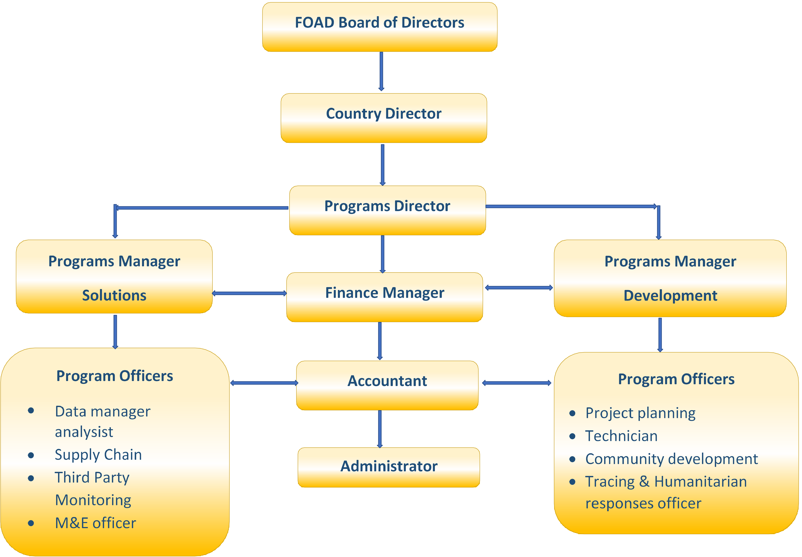

Watch us how we take care of everyone
Focus on Africa Development Inc. (FOAD) is an international non-governmental organization that was established in 2007 by Dr. Said Aden, An australian public health specialist of somali origin. With its africa region head quarters in Nairobi, FOAD has since expanded and is operational in Kenya, Rwanda, South Sudan and has affiliate offices in Australia.
Our Vision
A fair and just society, with responsible and dynamic people working to transform communities for a better world.
Our Mission
To reflect the best of humanity through positive interventions that seek to improve the quality of life for the under privileged in society
Our Values
Pooling resources together in an atmosphere of trust, respect and commitment.
FOAD believes in the human dignity of the poor, vulnerable and marginalized
communities and strives to uphold this dignity.
FOAD believes that every human being has a right to decent living conditions
punctuated with access to all basic services.
Director
Public health specialist and coordinates the Policy framework of FOAD's health docket and public relations
Director
Community Development practitioner and coordinates FOAD's gender and community-based empowerment and social enterprise development
Director
Monitoring Evaluation specialist and program coordinator
Focus on Africa Development Inc. is a philanthropic organization that utilizes its
varied competencies and skills to assist in the strengthening of both non-profit International
humanitarian Organizations and NGOs capacity through both short-term and long-term solutions,
and continues to provide new practices and perpectives that contribute towards improvements
FOAD has set out on "Strategic Direction" that articulates the significant and sustainable
positive changes we want to become a reality in the lives of marginalized and at-risk communities.
Our priority actions are geared towards achieving positive change.
Our operational structure is divided into two distinct but inter-related divisions, Namely: development and solutions departments.
Resources Generated by the solutions department through consultancies are utilized by the development department to fund community initiatives identified in our annual strategic plan. While all philanthropic projects implemented by development department are internally monitored and Evaluated by solutions department to ensure efficient use of resources.
Whose mission is to reflect the best of humanity through positive interventions that seek to improve the quality of life for the under privileged in society. It is the implementing arm of the organization, and is responsible for implementing/delivering community projects which include:
To reflect the best in Business by facilitating innovation, contributing towards research, Knowledge and adopting to emerging challenges
Providing access to safe water and adequate sanitation .
sensitization of Community Groups on clean Environment
Building assets and diversifying income is a fundemental step.
Our guiding is The World Health Organization's definition of health

raised by 6,388 people in 7 days
volunteer are available to help you

Providing access to safe water and adequate sanitation.
sensitization of Community Groups on clean Environment
Building assets and diversifying income is a fundemental step.

Focus on Africa Development Inc. (FOAD) is a regional non-governmental organization that was established in 2006 by a Somali Physician and Public Health Expert Dr. Said Aden and later registered in Somalia, Rwanda and South Sudan and has affiliate office in Australia.